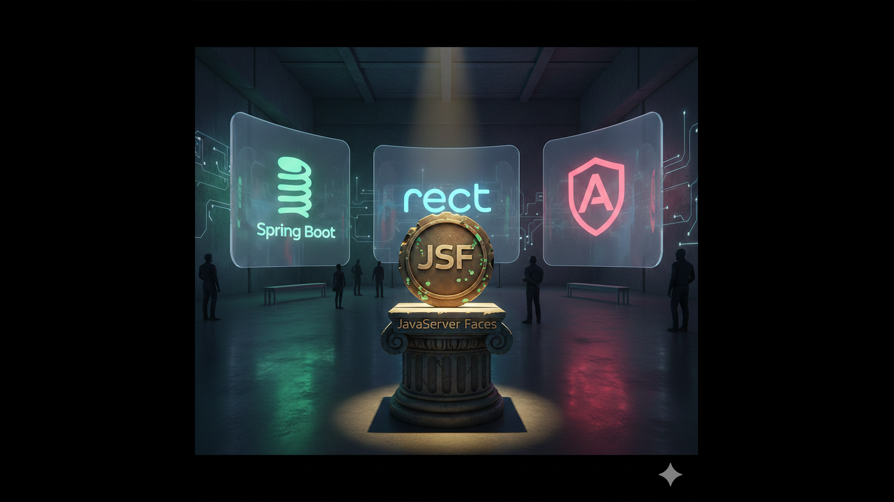

JSF: Crônica de uma Aposentadoria Anunciada

Você já se deparou com um projeto Java legado e sentiu que viajou no tempo? Siglas como JSF, faces-config.xml, e um mar de componentes PrimeFaces podem assustar. Se isso aconteceu, saiba que você não está sozinho. Esse sentimento é um rito de passagem para muitos desenvolvedores que herdam sistemas construídos em uma era diferente da web.
Houve uma época em que o JavaServer Faces (JSF) era a vanguarda, a grande promessa para construir interfaces web robustas e complexas com a solidez do Java. Mas, como em toda boa história de tecnologia, uma reviravolta aconteceu. Vamos mergulhar fundo nessa crônica, entender o que levou o JSF a uma merecida aposentadoria e, mais importante, como podemos guiar seus descendentes legados para o futuro, de forma segura e planejada.
O Cenário Pré-JSF: O Velho Oeste do Java Web
Para entender a ascensão do JSF, precisamos voltar um pouco mais no tempo. No início dos anos 2000, o desenvolvimento web com Java era um território selvagem, dominado por Servlets e JavaServer Pages (JSP).
- Servlets eram puros, poderosos, mas verbosos. Escrever HTML dentro de código Java (
out.println("<h1>Olá</h1>")) era comum, uma prática que hoje sabemos ser um pesadelo de manutenção. - JSPs inverteram o jogo, permitindo embutir código Java dentro do HTML usando tags especiais (
<% ... %>). Foi uma melhoria, mas rapidamente levava a um "código espaguete", onde a lógica de negócio se misturava perigosamente com a apresentação.
Faltava um padrão, um framework que trouxesse ordem ao caos, que permitisse a reutilização de componentes e que abstraísse a complexidade do protocolo HTTP. O mercado ansiava por um modelo similar ao desenvolvimento desktop, com componentes de arrastar e soltar. Foi nesse cenário que o JSF nasceu, prometendo ser o herói da produtividade.
O Reinado dos Componentes: Uma Promessa de Simplicidade
O JSF chegou com uma proposta revolucionária para a época: um modelo de componentes de UI (User Interface) totalmente gerenciado no servidor. A ideia era brilhante: o desenvolvedor web não precisaria mais se preocupar com os detalhes do HTML, JavaScript ou do ciclo de vida das requisições HTTP.
Imagine a era pré-smartphones, onde celulares tinham botões físicos para tudo. O JSF era assim: robusto e baseado em componentes. Quer um campo de texto? Use <h:inputText>. Um botão? <h:commandButton>. Cada um desses componentes era um objeto Java no servidor, com seu próprio estado, eventos e ciclo de vida.
Por exemplo, para criar um campo de login, você faria algo assim em seu arquivo .xhtml:
<h:form>
<h:panelGrid columns="2">
<h:outputLabel for="username" value="Usuário:" />
<h:inputText id="username" value="#{loginBean.username}" required="true" />
<h:outputLabel for="password" value="Senha:" />
<h:inputSecret id="password" value="#{loginBean.password}" required="true" />
</h:panelGrid>
<h:commandButton value="Login" action="#{loginBean.doLogin}" />
</h:form>
A mágica estava no value="#{loginBean.username}". Isso ligava diretamente o campo de texto a uma propriedade em uma classe Java no backend (o "Managed Bean"). O framework cuidava de tudo: renderizar o HTML, capturar os dados do formulário, atribuí-los ao bean, invocar a ação doLogin e, finalmente, decidir para qual página navegar. Para o desenvolvedor, parecia que ele estava programando para desktop, mas na web.
As Rachaduras na Coroa: A Complexidade Oculta
O que parecia ser a força do JSF — a abstração completa do front-end — também se tornou sua maior fraqueza. Por baixo da aparente simplicidade, havia uma máquina complexa e opinativa.
O Ritual de Seis Passos
Cada clique, cada interação do usuário, disparava o infame Ciclo de Vida do JSF, um ritual de seis fases que acontecia no servidor:
- Restore View: O servidor recriava a árvore de componentes da página.
- Apply Request Values: Os novos valores enviados pelo navegador eram aplicados aos componentes.
- Process Validations: As regras de validação eram executadas.
- Update Model Values: Se tudo estivesse válido, os valores eram salvos nos Managed Beans.
- Invoke Application: O método de ação (como o
doLogin) era executado. - Render Response: O servidor gerava o novo HTML para ser enviado de volta ao navegador.
Esse ciclo, embora poderoso, era muitas vezes um exagero. Para uma simples atualização, todo esse processo era executado, tornando a aplicação pesada e a depuração, um pesadelo. Um erro em qualquer fase poderia gerar exceções misteriosas e difíceis de rastrear.
A Mochila Pesada do ViewState
Para manter o estado de todos os componentes entre as requisições, o JSF criou o ViewState: um campo oculto no formulário HTML (<input type="hidden" name="javax.faces.ViewState" ... />) que continha uma versão serializada de toda a árvore de componentes.
A analogia é perfeita: era como carregar uma mochila pesada com todos os seus pertences para uma curta caminhada até a esquina. Na maioria das vezes, você não precisava de tudo, mas era forçado a carregar o peso para frente e para trás a cada passo. Isso resultava em HTMLs gigantescos, consumo elevado de banda e uma lentidão perceptível para o usuário.
A Chegada dos Velocistas: A Revolução JavaScript
Enquanto o JSF operava como um caminhão robusto e lento, o mundo fora do Java não parou. A verdadeira revolução estava acontecendo no navegador. A popularização do AJAX (Asynchronous JavaScript and XML) quebrou o modelo de "refresh total da página".
Frameworks como Spring MVC já ofereciam uma alternativa mais leve e com mais controle, tratando o HTTP como um cidadão de primeira classe. Mas a grande virada veio com as bibliotecas JavaScript: React, Angular e Vue.js.
Eles introduziram o conceito de Single-Page Applications (SPAs). A analogia do caminhão dá lugar à dos carros esportivos: em vez de reconstruir o carro inteiro a cada tarefa, uma equipe de pit stop (o JavaScript no navegador) apenas solicita as peças (dados) necessárias ao chefe de equipe (a API no servidor) e as troca rapidamente.
A comunicação mudou de "me dê a página inteira" para "me dê apenas os dados do usuário" através de APIs RESTful. Uma interação que no JSF envolvia um postback completo e o ciclo de seis passos, agora se resumia a uma simples chamada fetch em JavaScript:
fetch('/api/users/123')
.then(response => response.json())
.then(user => {
// Apenas atualiza a parte da tela que mostra o nome do usuário
document.getElementById('username-display').textContent = user.name;
});
Essa abordagem era drasticamente mais rápida, mais escalável e proporcionava uma experiência de usuário muito mais fluida, similar à de um aplicativo nativo.
Navegando a Transição: O Legado Não Pode Parar
Então, o veredito é simples? Jogar fora todo o código JSF e começar do zero? Para uma empresa com um sistema crítico em produção, a resposta é um sonoro não. Um "big bang" de reescrita é arriscado, caro e pode levar anos, sem entregar valor nesse meio tempo.
A solução é uma migração gradual e planejada. A estratégia mais elegante para isso é o Strangler Fig Pattern (Padrão de Figo Estrangulador).
A ideia é construir a nova aplicação (o figo) ao redor do sistema legado (a árvore), gradualmente interceptando e substituindo suas funcionalidades até que o sistema antigo se torne obsoleto e possa ser desligado.
Um Roteiro para a Modernização
-
A Fachada Protetora (API Gateway)
O primeiro passo é colocar um API Gateway na frente de toda a aplicação JSF. Todas as requisições, sem exceção, agora passam por ele. Inicialmente, ele apenas atua como um proxy, redirecionando tudo para o sistema legado. Isso nos dá um ponto de controle central.
-
O Primeiro Microserviço
Identifique uma funcionalidade de negócio que seja relativamente isolada. Pode ser o cadastro de um novo produto ou a geração de um relatório. Reescreva essa funcionalidade como um microserviço independente, usando uma stack moderna como Spring Boot, e crie uma nova interface para ela em React ou Angular.
-
O Desvio Inteligente
Agora, configure o API Gateway. Quando uma requisição para a "nova" funcionalidade chegar (ex:
/api/v2/produtos), o gateway a redireciona para o novo microserviço. Todas as outras requisições (ex:/legacy/home.jsf) continuam indo para o monolito JSF. O usuário final utiliza um sistema híbrido sem perceber. -
Expandir e Conquistar
Repita o processo. Módulo por módulo, vá "estrangulando" o sistema legado. Cada nova funcionalidade é um novo microserviço. Funções antigas são reescritas e as rotas no API Gateway são atualizadas. O monolito JSF vai encolhendo em escopo e importância.
Este método permite entregar valor continuamente, reduzir o risco da migração e dar tempo para a equipe aprender as novas tecnologias de forma gradual.
O Kit de Ferramentas do Desenvolvedor Java Moderno
O JSF nos ensinou muito, mas o futuro é claro. Hoje, o ecossistema Java para web é um dos mais poderosos e versáteis que existem:
- Backend: Frameworks como Spring Boot dominam pelo seu ecossistema maduro. Quarkus e Micronaut brilham em cenários de microsserviços e computação nativa (GraalVM), oferecendo tempos de startup incrivelmente rápidos e baixo consumo de memória.
- Frontend: A escolha é sua. React oferece flexibilidade, Angular vem com uma estrutura completa e opinativa, e Vue.js é conhecido por sua curva de aprendizado suave.
- A Cola: A comunicação é feita primariamente via APIs REST, mas GraphQL ganha cada vez mais espaço por permitir que o frontend peça exatamente os dados de que precisa, evitando o excesso de informações.
Entender a jornada do JSF é compreender a própria evolução da web. A tecnologia é um organismo vivo, e a lição mais importante é que a mudança é a única constante. O desenvolvedor que abraça a transição, que aprende com o passado mas constrói para o futuro, é aquele que sempre terá um lugar de destaque nessa história.